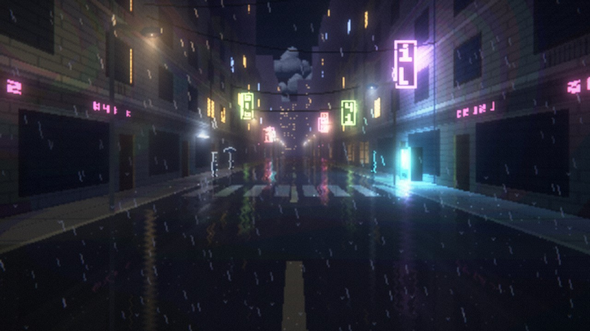
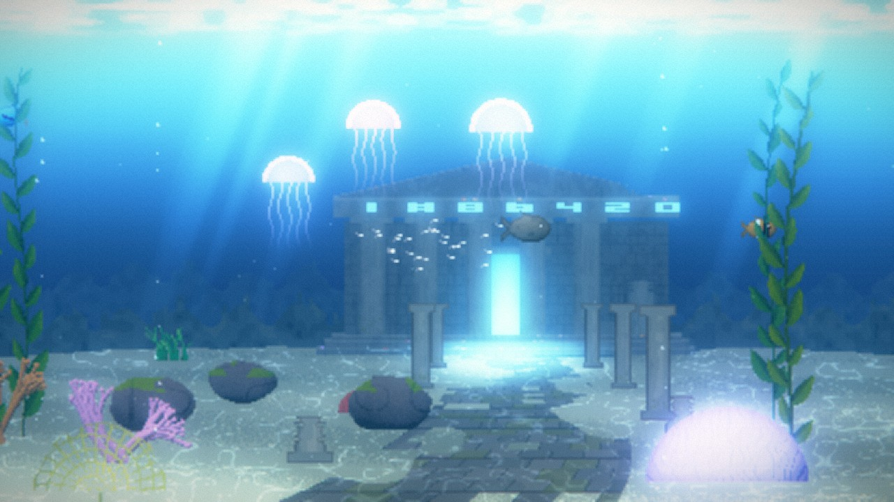
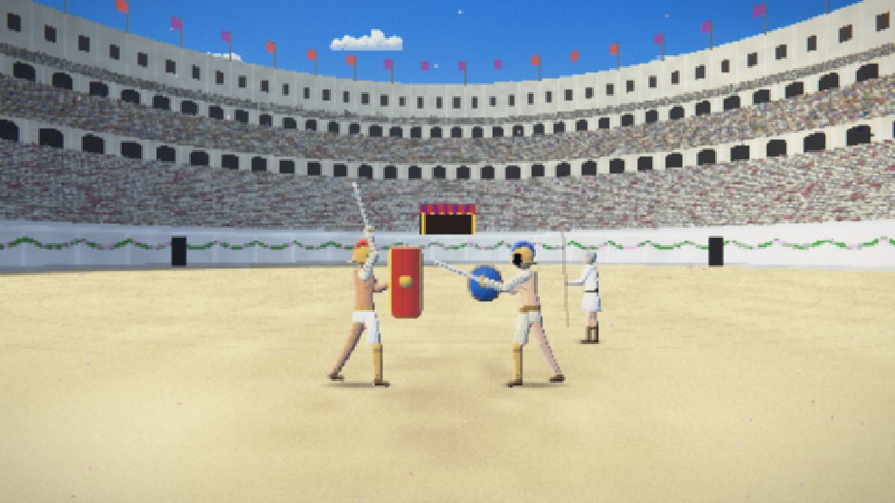
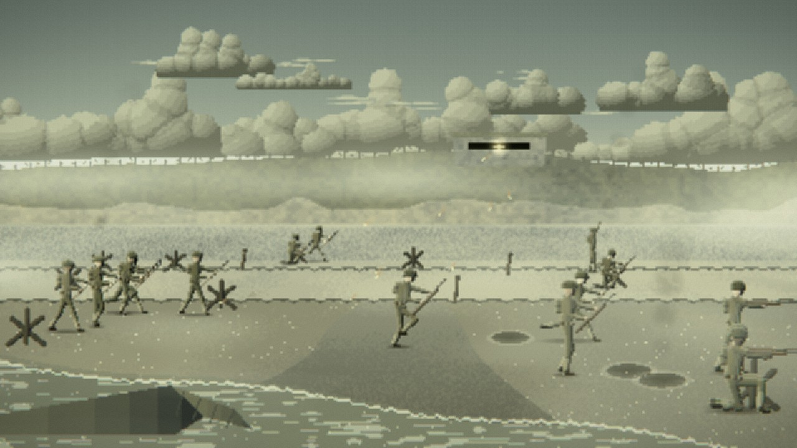
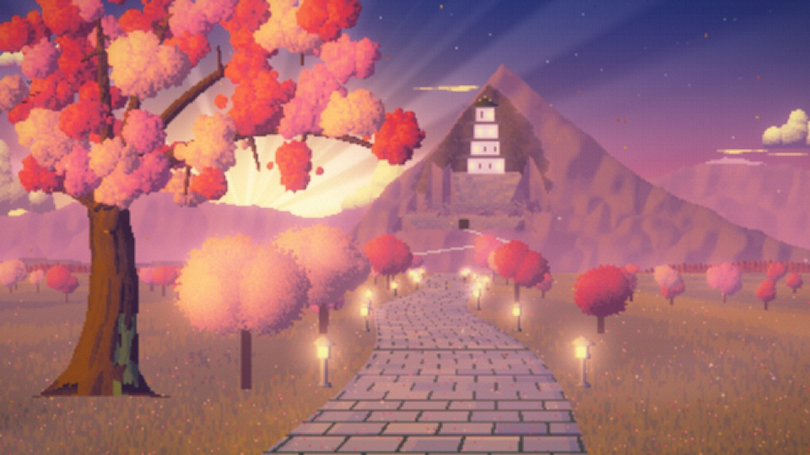
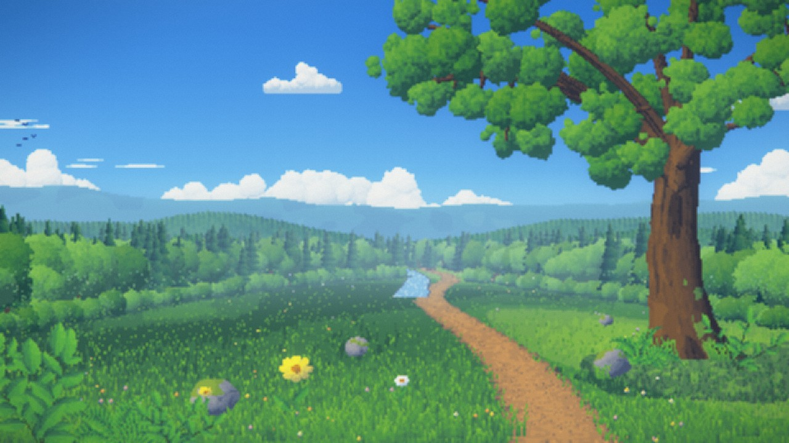
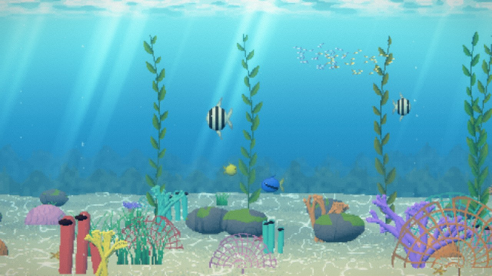
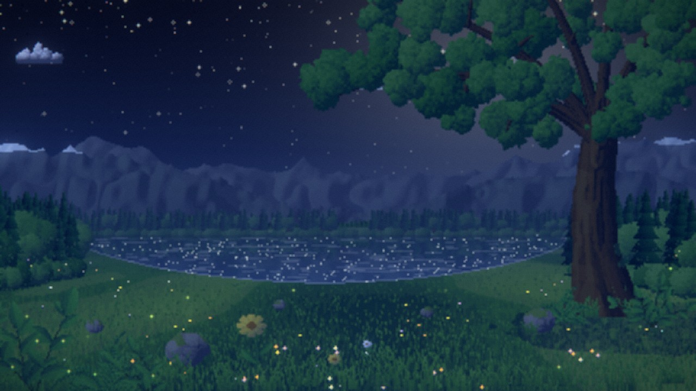

Two ways to paint a pixel scene
The newest work is Pixel Studio: painterly, high-detail pixel scenes built from plain settings. Its twelve scenes and their 48 variants have their own page, with the prompt and settings behind every picture. Further down is the original engine’s test reel, where each scene is hand-built code on a fixed palette.








Pixel Studio scenes
New: the original engine’s film finish and neon-noir look are back. A sunken temple with a glowing door, Rain City rebuilt with a Neon Rain alley, and better-drawn gladiators and soldiers. Plus countryside, a coral reef, a starry night, a coast, a village market, a castle siege, a desert, the Colosseum, D-Day and the Blossom Castle, now built into its mountain. Every variant plays live and lists its settings.
See all 48 variants →Open the Studio
Describe a scene in your own words or pick a type, then change the light, weather, season and features. Every setting says what it does.
Open it →Engine test reel
Harbour Lights in four projections, every option on its own, the HD finish, and the underwater, cave and space tests.
Jump down ↓Harbour Lights, every way it can be drawn
One fishing-harbour story rendered by a pixel-art scene prompt in four projections, then with each option changed on its own: time of day, weather, characters, camera, dithering, palette, lamp strength and more. Three more scenes cover underwater, underground and space, and the newest, Underwater Temple, was generated straight from a filled-in prompt. Every scene is live code on a 320×180 canvas with a fixed palette. Pick any thumbnail to play it.
Compose your own scene: choose the options, start from any of these scenes, and copy the finished prompt.
Every scene loops seamlessly (the harbour runs 64 seconds). Click the scene, then press Space to pause and the arrow keys to step frames.
Made from the prompt
Generated straight from a filled-in copy of the prompt, with no hand-built reference scene behind it. Tap the still to play it above, or jump to a beat.
Four projections
The same timeline, palette and options, drawn side-on, in perspective, from above and as an isometric diorama.
Projection × time and weather
One option at a time
Side view. Each card changes a single option from the reference; hover a thumbnail to compare it with the reference at the same moment.
HD finish
An optional output stage: the pixel frame stays the base layer at an exact 6x (1080p) or 12x (4K), and a GPU pass adds smooth light, glow, depth of field and a grade. In the player, press H to compare, R for 4K; opened on its own it saves PNGs and records the loop as video.
One look, two places
Neon Rain's lighting recipe, extracted into a shared kit and a single option (LOOK = neon-noir), then reused for a different scene in a different projection.
New environments
Three scenes for the settings the harbour can't show: underwater, underground and space. Each also tests something new.
Earlier test scenes
The scenes that came before the harbour, used to test each projection for the first time.